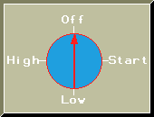
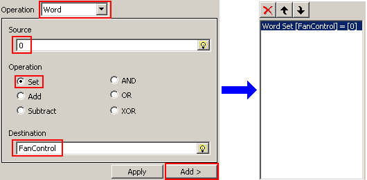

|
|
|
|
|
|
|
|
This example shows how a Circular Selector can be set up to control the speed of a fan.
The Selector in the following example has:
Two Variables: (See Chapter 6, Creating Variables)
FanControl: an external variable read by the PLC, which controls the fan's speed.
SelectorControl: An internal variable called SelectorControl, which controls the Selector's state.
Four states: Off, Start, Low, High
A popup keypad to control the Selector's states.
Actions for each state to control the fan's speed.


Selectors cannot be drawn less than 20 pixels by 20 pixels.
Click the Switch icon on the graphical objects toolbar and select Circular Selector.
On the panel, click and draw the area of the Selector.
The Selector Settings dialog box opens.
In the Variable property, select the internal integer variable SelectorControl. The control variable controls the Selector's states.
Select 4 states from the Num. of States drop-down list.
Click the Label tab and select Enabled from the Label Type drop-down list.
Use the State drop-down list or the next and previous buttons to select state 0, and define the label for this state.
Define the labels for all the states. In this example, the states are: Off, Start, Low, High.
Click the Input Mode tab, select Enable Input Mode, and specify the type of input control. In this example, we use a Change-Immediate popup keypad.
Select the Enable Actions checkbox to enable actions for the Selector. Use the State drop-down list or the next and previous buttons to select state 0.
Define the operation for state 0: select Word from the Operation drop-down list, type 0 in the Source field, select Set in the Operation field, define the external variable FanControl as the Destination variable, and click Add.

The Operation, Wordset[FanControl]=[0], is added to the state.
Define the operations for the remaining states: State 1: Wordset[FanControl]=[10], State 2: Wordset[FanControl]=[20], State 3: Wordset[FanControl]=[30].
Click OK to create the Selector.